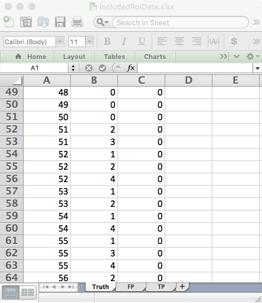
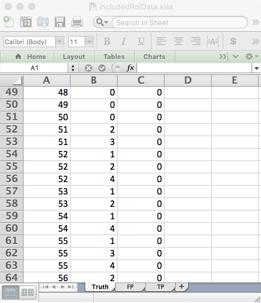
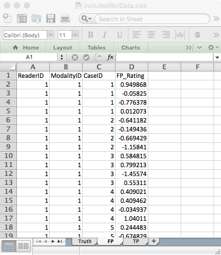

Chapter 4 ROI paradigm data
4.1 Introduction; this vignette is under construction!
- In the region-of-interest (ROI) paradigm (Obuchowski 1997, @RN55) each case is regarded as consisting of \({Q_{k}}\) (\({Q_{k}}\ge 1\)) “quadrants” or “regions-of-interest” or ROIs, where k is the case index (\(k=1,2,...,K\)) and \(K\) is the total number of cases (i.e., case-level non-diseased plus case-level diseased cases). Each ROI needs to be classified, by the investigator, as either ROI-level-non-diseased (i.e., it has no lesions) or ROI-level-diseased (i.e., it has at least one lesion). Note the distinction between case-level and ROI-level truth states. One can have ROI-level non-diseased regions in a case-level diseased case. A case-level diseased case must contain at least one ROI-level diseased region and a case-level non-diseased case cannot have any ROI-level diseased regions.
- The observer gives a single rating (in fact an ordered label) to each ROI, denoted \({R_{kr}}\) (\(r\) = 1, 2, …, \({Q_k}\)). Here \(r\) is the ROI index and \(k\) is the case index. The rating can be an integer or quasi- continuous (e.g., 0 – 100), or a floating point value, as long as higher numbers represent greater confidence in presence of one or more lesions in the ROI.
- The ROI paradigm is not restricted to 4 or even a constant number of ROIs per case. That is the reason for the k subscript in \({Q_k}\).
- The ROI data structure is a special case of the FROC data structure, the essential difference being that the number of ratings per case is an a-priori known value, equal to \({Q_{k}}\).
- ROI-level non-diseased region ratings are stored in the
NLfield and ROI-level diseased region ratings are stored in theLLfield.
- One can think of the ROI paradigm as similar to the FROC paradigm, but with localization accuracy restricted to belonging to a region (one cannot distinguish multiple lesions within a region). Unlike the FROC paradigm, a rating is required for every ROI.
4.2 An example ROI dataset
An example simulated ROI dataset is included as datasetROI.
str(datasetROI)
#> List of 8
#> $ NL : num [1:2, 1:5, 1:90, 1:4] 0.95 0.927 0.556 0.805 1.421 ...
#> $ LL : num [1:2, 1:5, 1:40, 1:4] 1.57 2.31 2.3 2.34 2.34 ...
#> $ lesionVector: int [1:40] 2 3 2 2 3 3 1 2 3 3 ...
#> $ lesionID : num [1:40, 1:4] 2 1 1 1 1 2 4 1 1 1 ...
#> $ lesionWeight: num [1:40, 1:4] 0.5 0.333 0.5 0.5 0.333 ...
#> $ dataType : chr "ROI"
#> $ modalityID : Named chr [1:2] "1" "2"
#> ..- attr(*, "names")= chr [1:2] "1" "2"
#> $ readerID : Named chr [1:5] "1" "2" "3" "4" ...
#> ..- attr(*, "names")= chr [1:5] "1" "2" "3" "4" ...
datasetROI$NL[1,1,1,]
#> [1] 0.9498680 -0.0582497 -0.7763780 0.0120730
mean(datasetROI$NL[,,1:50,])
#> [1] 0.1014348
datasetROI$NL[1,1,51,]
#> [1] 1.01867 0.34710 -Inf -Inf
datasetROI$lesionVector[1]
#> [1] 2
datasetROI$LL[1,1,1,]
#> [1] 1.56928 2.05945 -Inf -Inf
x <- datasetROI$LL;mean(x[is.finite(x)])
#> [1] 1.815513Examination of the output reveals that:
- This is a 2-treatment 5-reader dataset, with 50 non-diseased cases and 40 diseased cases, and \({Q_k}=4\) for all k.
- For treatment 1, reader 1, case 1 (the 1st non-diseased case) the 4 ratings are 0.949868, -0.0582497, -0.776378, 0.012073. The mean of all ratings on non-diseased cases is 0.1014348.
- For treatment 1, reader 1, case 51 (the 1st diseased case) the NL ratings are 1.01867, 0.3471. There are only two finite values because this case has two ROI-level-diseased regions, and 2 plus 2 makes for the assumed 4-regions per case. The corresponding
$lesionVectorfield is 2.
- The ratings of the 2 ROI-level-diseased ROIs on this case are 1.56928, 2.05945. The mean rating over all ROI-level-diseased ROIs is 1.8155127.
4.3 The ROI Excel data file
- An Excel file in JAFROC format containing simulated ROI data corresponding to
datasetROI, is included with the distribution. The first command (below) finds the location of the file and the second command reads it and saves it to a dataset objectds. !!!DPC!!! - The
DfReadDataFilefunction automatically recognizes that this is an ROI dataset. Its structure is similar to the JAFROC format Excel file, with some important differences, noted below. It contains three worksheets:
## fileName <- system.file(
## "extdata", "RoiData.xlsx", package = "RJafroc", mustWork = TRUE)
## ds <- DfReadDataFile(fileName)
## ds$dataType 

FIGURE 4.1: Fig. 1 two views of Truth worksheet
- The
Truthworksheet, Fig. 1, indicates which cases are diseased and which are non-diseased and the number of ROI-level-diseased region on each case.- There are 50 non-diseased cases (labeled 1-50) under column
CaseIDand 40 diseased cases (labeled 51-90).
- The
LesionIDfield for each non-diseased case (e.g.,CaseID= 1) is zero and there is one row per case. For diseased cases, this field has a variable number of entries, ranging from 1 to 4. As an example, there are two rows forCaseID= 51 in the Excel file: one withLesionID= 2 and one withLesionID= 3.
- The
Weightsfield is always zero (this field is not used in ROI analysis).
- There are 50 non-diseased cases (labeled 1-50) under column

FIGURE 4.2: Fig. 2 two views of FP worksheet
- The
FP(orNL) worksheet - this lists the ratings of ROI-level-non-diseased regions.- For
ReaderID= 1,ModalityID= 1 andCaseID= 1 there are 4 rows, corresponding to the 4 ROI-level-non-diseased regions in this case. The corresponding ratings are 0.949868, -0.0582497, -0.776378, 0.012073. The pattern repeats for other treatments and readers, but the rating are, of course, different.
- Each
CaseIDis represented in theFPworksheet (a rare exception could occur if a case-level diseased case has 4 diseased regions).
- For

FIGURE 4.3: Fig. 2 TP worksheet
- The
TP(orLL) worksheet - this lists the ratings of ROI-level-diseased regions.- Because non-diseased cases generate TPs, one does not find any entry with
CaseID= 1-50 in theTPworksheet.
- The lowest
CaseIDin theTPworksheet is 51, which corresponds to the first diseased case.
- There are two entries for this case, corresponding to the two ROI-level-diseased regions present in this case. Recall that corresponding to this
CaseIDin theTruthworksheet there were two entries withLesionID= 2 and 3. These must match theLesionID’s listed for this case in theTPworksheet. Complementing these two entries, in theFPworksheet forCaseID= 51, there are 2 entries corresponding to the two ROI-level-non-diseased regions in this case.
- One should confirm that for each diseased case the sum of the number of entries in the
TPandFPworksheets is always 4.
- Because non-diseased cases generate TPs, one does not find any entry with
4.4 Next, TBA
The next vignette illustrates significance testing for this paradigm.
4.5 References
References
Obuchowski, Nancy A. 1997. “Nonparametric Analysis of Clustered Roc Curve Data.” Journal Article. Biometrics 53: 567–78.